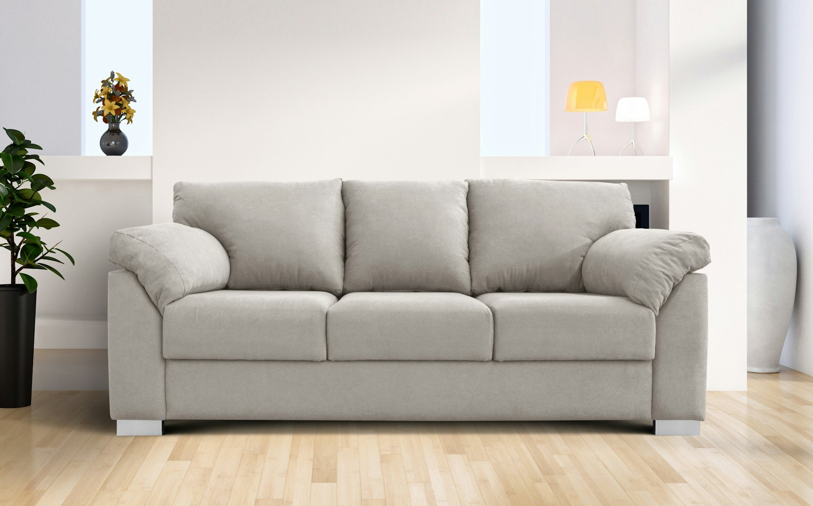

Passe a extratora você mesmo
Arraste a barra azul pelo sofá. É assim que a sujeira do dia a dia sai do tecido, faixa por faixa.

Depois AntesSimulação ilustrativa sobre uma foto do Unsplash. No site final entram os antes e depois reais que a Vitória posta no Instagram.
O que vamos higienizar?
Toque em tudo que você quer limpar. A lista se monta ao lado e vai pronta para o WhatsApp do Sandro, que responde com o valor.
Do WhatsApp ao sofá limpo
Sem precisar levar nada a lugar nenhum: o equipamento vai até você.
Manda a foto
Pelo WhatsApp, com o que precisa limpar e a sua cidade.
Recebe o valor
O Sandro responde com o orçamento e vocês combinam o dia.
Ele vai até você
A higienização é feita aí mesmo, na sua sala ou no seu quarto.
É só esperar secar
Ele explica o tempo de secagem antes de ir embora.
Texto de exemplo. No site final entra o passo a passo do jeito que a Vitória trabalha.
Pet, criança, café derramado
O sofá é onde a casa acontece. Uma higienização de tempos em tempos devolve a cor do tecido e o cheiro de limpo.
- ManchasCafé, suco, refrigerante e aquela marca que ninguém sabe de onde veio.
- CheirosXixi de pet, suor e cheiro de guardado que fica no tecido e na espuma.
- Pó e ácarosO que se acumula no colchão e no sofá e incomoda quem tem rinite.
Texto de exemplo. No site final entram os produtos e o método que a Vitória usa.
Mais de 1.700 trabalhos postados
Quase todo dia tem sofá novo no Instagram da Vitória. Dá uma olhada antes de chamar.
Fotos ilustrativas. No site final entram as fotos dos trabalhos do Instagram @vitoriapiracicaba.
Atende na sua casa
A Vitória não tem loja: o Sandro leva o equipamento até você.
- Piracicabaa domicílio
- São Pedroa domicílio
- Águas de São Pedroa domicílio
- (19) 99974-6422
- @vitoriapiracicaba